Frame Unwrapping#
Context#
At time-of-flight neutron sources recording event-mode, time-stamps of detected neutrons are written to files in an NXevent_data group. This contains two main time components, event_time_zero and event_time_offset. The sum of the two would typically yield the absolute detection time of the neutron. For computation of wavelengths or energies during data-reduction, a time-of-flight is required. In principle the time-of-flight could be equivalent to event_time_offset, and the
emission time of the neutron to event_time_zero. Since an actual computation of time-of-flight would require knowledge about chopper settings, detector positions, and whether the scattering of the sample is elastic or inelastic, this may however not be the case in practice. Instead, the data acquisition system may, e.g., record the time at which the proton pulse hits the target as event_time_zero, with event_time_offset representing the offset since then.
We refer to the process of “unwrapping” these time stamps into an actual time-of-flight as frame unwrapping, since event_time_offset “wraps around” with the period of the proton pulse and neutrons created by different proton pulses may be recorded with the same event_time_zero. The figures in the remainder of this document will clarify this.
[1]:
import numpy as np
import plopp as pp
import scipp as sc
import sciline as sl
from scippneutron.tof import unwrap
from scippneutron.tof import chopper_cascade
import tof as tof_pkg
import matplotlib.pyplot as plt
from matplotlib.patches import Polygon
Hz = sc.Unit("Hz")
deg = sc.Unit("deg")
meter = sc.Unit("m")
Default mode#
Often there is a 1:1 correspondence between source pulses and neutron pulses propagated to the sample and detectors.
In this first example:
We begin by creating a source of neutrons which mimics the ESS source.
We set up a single chopper with a single opening
We place 4 ‘monitors’ along the path of the neutrons (none of which absorb any neutrons)
[2]:
source = tof_pkg.Source(facility="ess", neutrons=300_000, pulses=5)
chopper = tof_pkg.Chopper(
frequency=14.0 * Hz,
open=sc.array(dims=["cutout"], values=[0.0], unit="deg"),
close=sc.array(dims=["cutout"], values=[3.0], unit="deg"),
phase=85. * deg,
distance=8.0 * meter,
name="chopper",
)
detectors = [
tof_pkg.Detector(distance=20.0 * meter, name="beam"),
tof_pkg.Detector(distance=60.0 * meter, name="sample"),
tof_pkg.Detector(distance=80.0 * meter, name="monitor"),
tof_pkg.Detector(distance=108.0 * meter, name="detector"),
]
model = tof_pkg.Model(source=source, choppers=[chopper], detectors=detectors)
results = model.run()
pl = results.plot(cmap='viridis_r')
for i in range(source.pulses):
pl.ax.axvline(i * (1.0 / source.frequency).to(unit='us').value, color='k', ls='dotted')
x = [results[det.name].toas.data['visible'][f'pulse:{i}'].coords['toa'].min().value
for det in detectors]
y = [det.distance.value for det in detectors]
pl.ax.plot(x, y, '--o', color='magenta', lw=3)
if i == 0:
pl.ax.text(x[2], y[2] * 1.05, "pivot time", va='bottom', ha='right', color='magenta')
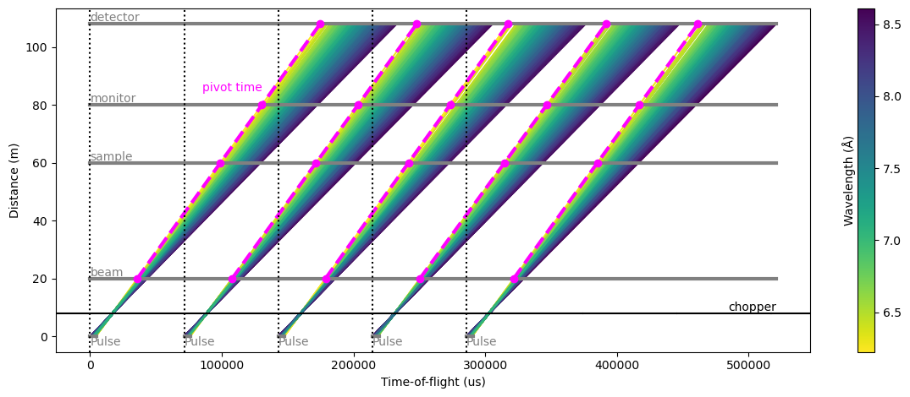
In the figure above, the dotted vertical lines represent the event_time_zero of each pulse, i.e. the start of a new origin for event_time_offset recorded at the various detectors.
The span between two dotted lines is called a ‘frame’.
The figure gives a good representation of the situation at each detector:
beam monitor: all the arrival times at the detector are inside the same frame within which the neutrons were created.
sample: all the arrival times are offset by one frame
monitor: most of the neutrons arrive with an offset of two frames, but a small amount of neutrons (shortest wavelengths) only have a 1-frame offset
detector: most of the neutrons arrive with an offset of two frames, but a small amount of neutrons (longest wavelengths) have a 3-frame offset
We can further illustrate this by making histograms of the event_time_offset of the neutrons for each detector:
[3]:
subplots = pp.tiled(2, 2, figsize=(9, 6))
for i, det in enumerate(detectors):
data = results.to_nxevent_data(det.name)
subplots[i // 2, i % 2] = data.bins.concat().hist(event_time_offset=200).plot(title=f'{det.name}={det.distance:c}', color=f'C{i}')
f = subplots[i // 2, i % 2]
xpiv = min(da.coords['toa'].min() % (1.0 / source.frequency).to(unit='us') for da in results[det.name].toas.data['visible'].values()).value
f.ax.axvline(xpiv, ls='dashed', color='magenta', lw=2)
f.ax.text(xpiv, 20, 'pivot time', rotation=90, color='magenta')
f.canvas.draw()
subplots
[3]:
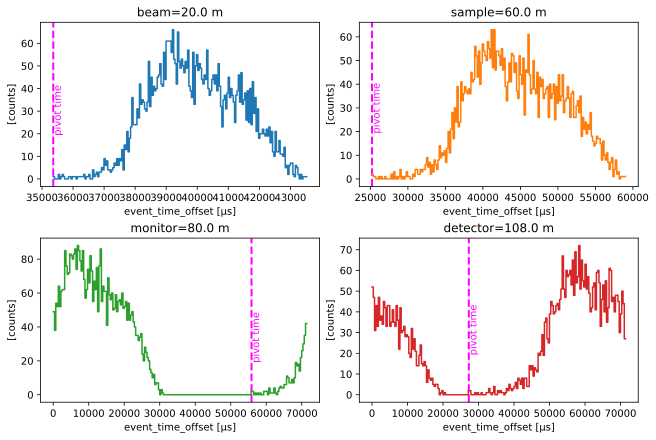
Pivot time#
To compute the time-of-flight for a neutron, we need to identify which source pulse it originated from.
In the first figure, the pink lines represent the earliest recorded arrival time at each detector: we know that within a given frame at a selected detector, any neutron recorded at a time earlier than this ‘pivot’ time must from from a previous pulse.
The position of the pink lines is repeated in the second figure (above). We can use this knowledge to unwrap the frames and compute the absolute time-of-arrival of the neutrons at the detectors.
Computing time-of-flight#
The pivot time and the resulting offsets can be computed from the properties of the source pulse and the chopper cascade.
We describe in this section the workflow that computes time-of-flight, given event_time_zero and event_time_offset for neutron events, as well as the properties of the source pulse and the choppers in the beamline.
The workflow can be visualized as follows:
[4]:
one_pulse = source.data['pulse', 0]
time_min = one_pulse.coords['time'].min()
time_max = one_pulse.coords['time'].max()
wavs_min = one_pulse.coords['wavelength'].min()
wavs_max = one_pulse.coords['wavelength'].max()
oc_times = chopper.open_close_times()
workflow = sl.Pipeline(unwrap.providers(), params=unwrap.params())
workflow[unwrap.PulsePeriod] = sc.reciprocal(source.frequency)
workflow[unwrap.SourceTimeRange] = time_min, time_max
workflow[unwrap.SourceWavelengthRange] = wavs_min, wavs_max
workflow[unwrap.Choppers] = {
'chopper': chopper_cascade.Chopper(
distance=chopper.distance,
time_open=oc_times[0].to(unit='s'),
time_close=oc_times[1].to(unit='s')
)
}
det = detectors[2]
workflow[unwrap.Ltotal] = det.distance
workflow[unwrap.RawData] = results.to_nxevent_data(det.name)
workflow.visualize(unwrap.TofData)
[4]:
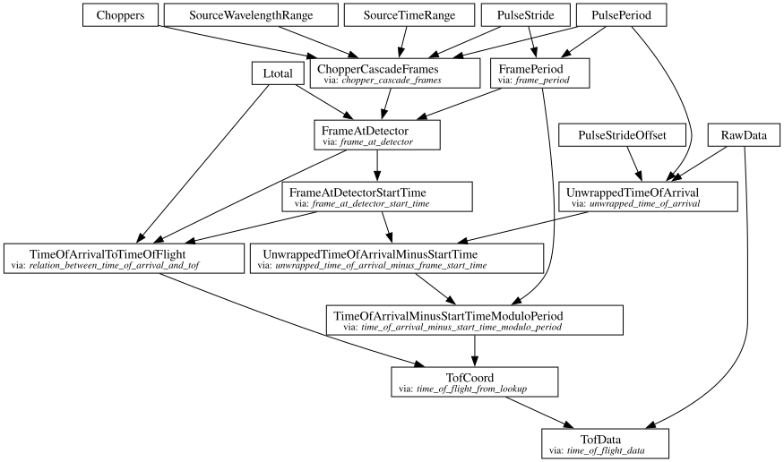
Unwrapped neutron time-of-arrival#
The first step that is computed in the workflow is the unwrapped detector arrival time of each neutron. This is essentially just event_time_offset + event_time_zero.
[5]:
da = workflow.compute(unwrap.UnwrappedTimeOfArrival)
da.bins.concat().value.hist(time_of_arrival=300).plot()
[5]:
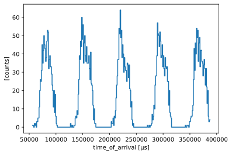
Unwrapped neutron time-of-arrival minus pivot time#
The next step is to subtract the pivot time to the unwrapped arrival times, to align the times so that they start at zero.
This allows us to perform a computationally cheap modulo operation on the times below.
[6]:
da = workflow.compute(unwrap.UnwrappedTimeOfArrivalMinusStartTime)
f = da.bins.concat().value.hist(time_of_arrival=300).plot()
for i in range(source.pulses):
f.ax.axvline(i * (1.0 / source.frequency).to(unit='us').value, color='k', ls='dotted')
f
[6]:
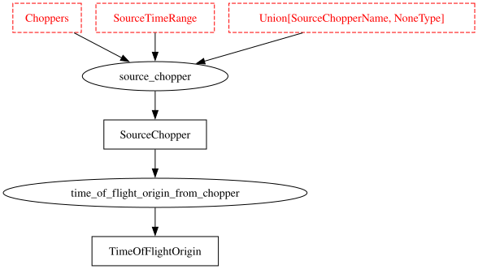
The vertical dotted lines here represent the frame period.
Unwrapped neutron time-of-arrival modulo the frame period#
We now wrap the arrival times with the frame period to obtain well formed (unbroken) set of events.
[7]:
da = workflow.compute(unwrap.TimeOfArrivalMinusStartTimeModuloPeriod)
da.bins.concat().value.hist(time_of_arrival=200).plot()
[7]:
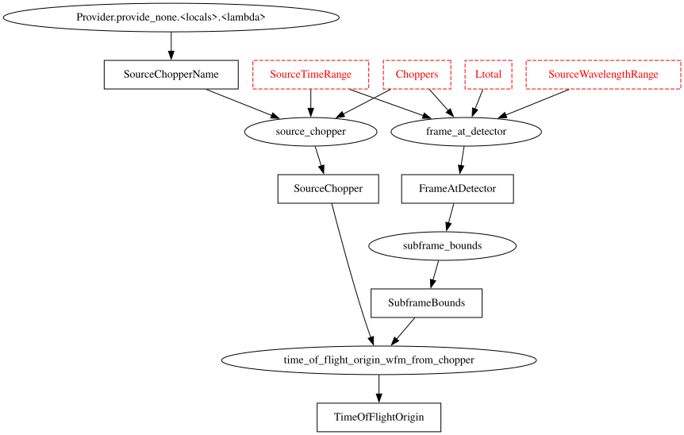
Using the subframes as a lookup table#
The chopper information is next used to construct a lookup table that provides an estimate of the real time-of-flight as a function of time-of-arrival.
The chopper_cascade module can be used to propagate the pulse through the chopper system to the detector, and predict the extent of the frames in arrival time and wavelength.
Assuming neutrons travel in straight lines, we can convert the wavelength range to a time-of-flight range.
[8]:
fig, axs = plt.subplots(1, 2, figsize=(9, 3))
# The chopper cascade frame (at the last component in the system which is the chopper)
frame = workflow.compute(unwrap.ChopperCascadeFrames)[0][-1]
# Plot the ranges covered by the neutrons at each detector as polygons
polygons = []
for i, det in enumerate(detectors):
at_detector = frame.propagate_to(det.distance)
for sf in at_detector.subframes:
x = sf.time
w = sf.wavelength
t = det.distance * chopper_cascade.wavelength_to_inverse_velocity(w)
axs[0].add_patch(Polygon(np.array([x.values, w.values]).T, color=f"C{i}", alpha=0.8))
axs[1].add_patch(Polygon(np.array([x.values, t.values]).T, color=f"C{i}", alpha=0.8))
axs[0].text(x.min().value, w.min().value, det.name, va='top', ha='left')
axs[1].text(x.min().value, t.min().value, det.name, va='top', ha='left')
for ax in axs:
ax.autoscale()
ax.set_xlabel("Time of arrival [s]")
axs[0].set_ylabel(r"Wavelength [\AA]")
axs[1].set_ylabel(r"Time of flight [s]")
fig.suptitle("Lookup tables for wavelength and time-of-flight as a function of time-of-arrival")
fig.tight_layout()
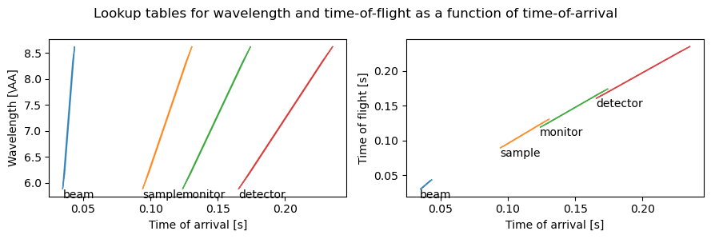
Since the polygons are very thin, we can approximate them with straight lines. This is done by using a least-squares method which minimizes the area on each side of the line that passes through the polygon (see https://mathproblems123.wordpress.com/2022/09/13/integrating-polynomials-on-polygons for more details).
These straight lines will be our lookup tables for computing time-of-flight as a function of time-of-arrival (we need two lookup tables: one for the slope of each line and one for the intercept).
[9]:
fig, ax = plt.subplots(2, 2, figsize=(9, 6))
axs = ax.ravel()
for i, det in enumerate(detectors):
workflow[unwrap.Ltotal] = det.distance
at_detector = workflow.compute(unwrap.FrameAtDetector)
start = workflow.compute(unwrap.FrameAtDetectorStartTime)
toa2tof = workflow.compute(unwrap.TimeOfArrivalToTimeOfFlight)
for sf in at_detector.subframes:
x = sf.time
y = det.distance * chopper_cascade.wavelength_to_inverse_velocity(sf.wavelength)
axs[i].add_patch(Polygon(np.array([x.values, y.values]).T, color=f"C{i}", alpha=0.8))
x = toa2tof.slope.coords['subframe']
y = toa2tof.slope.squeeze() * x + toa2tof.intercept.squeeze()
axs[i].plot((x+start).values, y.values, color='k', ls='dashed')
axs[i].set_xlabel("Time of arrival [s]")
axs[i].set_ylabel("Time of flight [s]")
axs[i].set_title(f'{det.name}={det.distance:c}')
fig.suptitle("Approximating the polygons with straight lines")
fig.tight_layout()
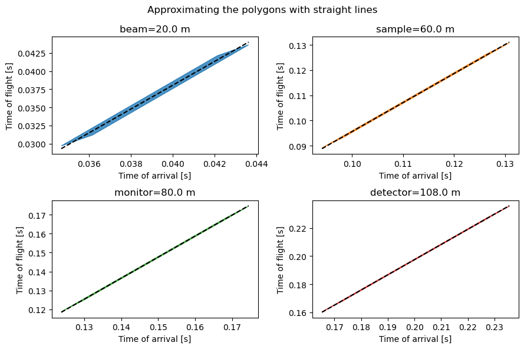
Computing time-of-flight from the lookup#
Now that we have a slope and an intercept for the frames at each detector, we can compute the time-of-flight of the neutrons.
[10]:
tofs = {}
for det in detectors:
workflow[unwrap.RawData] = results.to_nxevent_data(det.name)
workflow[unwrap.Ltotal] = det.distance
t = workflow.compute(unwrap.TofData)
tofs[det.name] = t.bins.concat().value.hist(tof=sc.scalar(500., unit='us'))
tofs[det.name].coords['Ltotal'] = t.coords['distance']
pp.plot(tofs)
[10]:
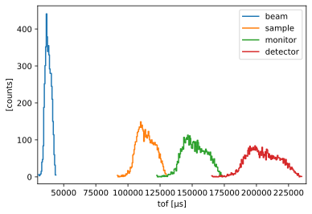
Converting to wavelength#
The time-of-flight of a neutron is commonly used as the fundamental quantity from which one can compute the neutron energy or wavelength.
Here, we compute the wavelengths from the time-of-flight using Scippneutron’s transform_coord utility, and compare our computed wavelengths to the true wavelengths which are known for the simulated neutrons.
[11]:
from scippneutron.conversion.graph.beamline import beamline
from scippneutron.conversion.graph.tof import elastic
# Perform coordinate transformation
graph = {**beamline(scatter=False), **elastic("tof")}
# Define wavelength bin edges
bins = sc.linspace("wavelength", 6.0, 9.0, 101, unit="angstrom")
wavs = {}
for det in detectors:
workflow[unwrap.RawData] = results.to_nxevent_data(det.name)
workflow[unwrap.Ltotal] = det.distance
t = workflow.compute(unwrap.TofData)
t.coords['Ltotal'] = t.coords.pop('distance')
wavs[det.name] = t.transform_coords("wavelength", graph=graph).bins.concat().hist(wavelength=bins)
ground_truth = results["detector"].data.flatten(to="event")
ground_truth = ground_truth[~ground_truth.masks["blocked_by_others"]].hist(wavelength=bins)
wavs['true'] = ground_truth
pp.plot(wavs)
[11]:
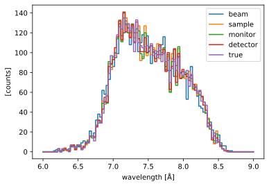
We see that all detectors agree on the wavelength spectrum, which is also in very good agreement with the true neutron wavelengths.
Pulse-skipping mode#
In some beamline configurations, one wishes to study a wide range of wavelengths at a high flux. This usually means that the spread of arrival times will spill-over into the next pulse if the detector is placed far enough to yield a good wavelength resolution.
To avoid the next pulse polluting the data from the current pulse, it is common practice to use a pulse-skipping chopper which basically blocks all neutrons every other pulse. This could also be every 3 or 4 pulses for very long instruments.
The time-distance diagram may look something like:
[12]:
source = tof_pkg.Source(facility="ess", neutrons=300_000, pulses=4)
choppers = [
tof_pkg.Chopper(
frequency=14.0 * Hz,
open=sc.array(dims=["cutout"], values=[0.0], unit="deg"),
close=sc.array(dims=["cutout"], values=[33.0], unit="deg"),
phase=35. * deg,
distance=8.0 * meter,
name="chopper",
),
tof_pkg.Chopper(
frequency=7.0 * Hz,
open=sc.array(dims=["cutout"], values=[0.0], unit="deg"),
close=sc.array(dims=["cutout"], values=[120.0], unit="deg"),
phase=10. * deg,
distance=15.0 * meter,
name="pulse-skipping",
)
]
detectors = [
tof_pkg.Detector(distance=60.0 * meter, name="monitor"),
tof_pkg.Detector(distance=100.0 * meter, name="detector"),
]
model = tof_pkg.Model(source=source, choppers=choppers, detectors=detectors)
results = model.run()
results.plot(cmap='viridis_r', blocked_rays=5000)
[12]:
Plot(ax=<Axes: xlabel='Time-of-flight (us)', ylabel='Distance (m)'>, fig=<Figure size 1200x480 with 2 Axes>)
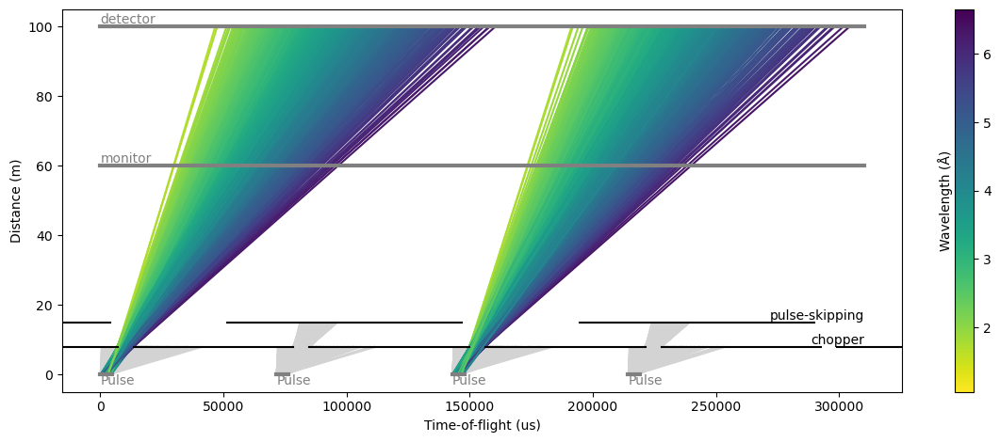
Computing time-of-flight#
To compute the time-of-flight in pulse skipping mode, we can use the same workflow as before.
The only difference is that we set the PulseStride to 2 to skip every other pulse.
[13]:
one_pulse = source.data['pulse', 0]
time_min = one_pulse.coords['time'].min()
time_max = one_pulse.coords['time'].max()
wavs_min = one_pulse.coords['wavelength'].min()
wavs_max = one_pulse.coords['wavelength'].max()
workflow = sl.Pipeline(unwrap.providers(), params=unwrap.params())
workflow[unwrap.PulsePeriod] = sc.reciprocal(source.frequency)
workflow[unwrap.PulseStride] = 2
workflow[unwrap.SourceTimeRange] = time_min, time_max
workflow[unwrap.SourceWavelengthRange] = wavs_min, wavs_max
workflow[unwrap.Choppers] = {
ch.name: chopper_cascade.Chopper(
distance=ch.distance,
time_open=ch.open_close_times()[0].to(unit='s'),
time_close=ch.open_close_times()[1].to(unit='s')
)
for ch in choppers
}
det = detectors[-1]
workflow[unwrap.Ltotal] = det.distance
workflow[unwrap.RawData] = results.to_nxevent_data(det.name)
If we inspect the time and wavelength polygons for the frames at the different detectors, we can see that they now span longer than the pulse period of 71 ms.
[14]:
frame = workflow.compute(unwrap.ChopperCascadeFrames)[0][-1]
fig, axs = plt.subplots(1, 2, figsize=(9, 3))
polygons = []
for i, det in enumerate(detectors):
at_detector = frame.propagate_to(det.distance)
for sf in at_detector.subframes:
x = sf.time
w = sf.wavelength
t = det.distance * chopper_cascade.wavelength_to_inverse_velocity(w)
axs[0].add_patch(Polygon(np.array([x.values, w.values]).T, color=f"C{i}", alpha=0.8))
axs[1].add_patch(Polygon(np.array([x.values, t.values]).T, color=f"C{i}", alpha=0.8))
for ax in axs:
ax.autoscale()
ax.set_xlabel("Time of arrival [s]")
axs[0].set_ylabel(r"Wavelength [\AA]")
axs[1].set_ylabel(r"Time of flight [s]")
fig.suptitle("Lookup tables for wavelength and time-of-flight as a function of time-of-arrival")
fig.tight_layout()
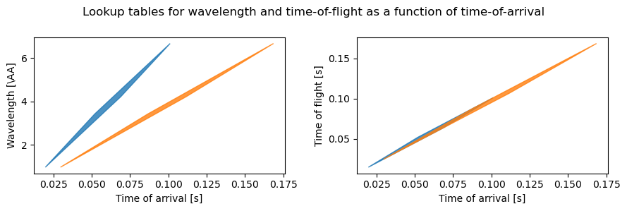
The time-of-flight profiles are then:
[15]:
tofs = {}
for det in detectors:
workflow[unwrap.RawData] = results.to_nxevent_data(det.name)
workflow[unwrap.Ltotal] = det.distance
t = workflow.compute(unwrap.TofData)
tofs[det.name] = t.bins.concat().value.hist(tof=sc.scalar(500., unit='us'))
tofs[det.name].coords['Ltotal'] = t.coords['distance']
pp.plot(tofs)
[15]:
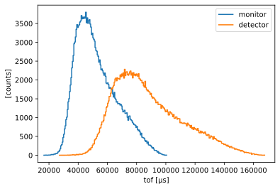
Conversion to wavelength#
We now use the transform_coords as above to convert to wavelength.
[16]:
# Define wavelength bin edges
bins = sc.linspace("wavelength", 1.0, 8.0, 401, unit="angstrom")
wavs = {}
for det in detectors:
workflow[unwrap.RawData] = results.to_nxevent_data(det.name)
workflow[unwrap.Ltotal] = det.distance
t = workflow.compute(unwrap.TofData)
t.coords['Ltotal'] = t.coords.pop('distance')
wavs[det.name] = t.transform_coords("wavelength", graph=graph).bins.concat().hist(wavelength=bins)
ground_truth = results["detector"].data.flatten(to="event")
ground_truth = ground_truth[~ground_truth.masks["blocked_by_others"]].hist(wavelength=bins)
wavs['true'] = ground_truth
pp.plot(wavs)
[16]:
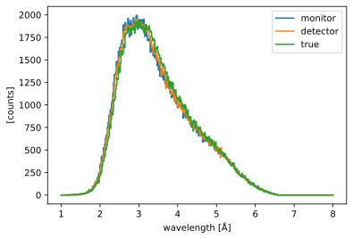
Wavelength-frame multiplication mode#
The case of wavelength-frame multiplication is treated in exactly the same way as above.
The only difference is that the choppers have multiple openings, and that the lookup tables have more than one distinct region (subframes) per detector.
But the workflow setup and execution remains exactly the same.
[17]:
source = tof_pkg.Source(facility="ess", neutrons=500_000, pulses=2)
slit_width = 3.
open_edge = sc.linspace('cutout', 0., 75, 6, unit='deg')
wfm = tof_pkg.Chopper(
frequency=14.0 * Hz,
open=open_edge,
close=open_edge + slit_width * deg,
phase=45. * deg,
distance=8.0 * meter,
name="WFM",
)
slit_width = 25.
open_edge = sc.linspace('cutout', 0., 190, 6, unit='deg')
foc = tof_pkg.Chopper(
frequency=14.0 * Hz,
open=open_edge,
close=open_edge + slit_width * deg,
phase=85. * deg,
distance=20.0 * meter,
name="FOC",
)
choppers = [wfm, foc]
detectors = [
tof_pkg.Detector(distance=30.0 * meter, name="detector"),
]
model = tof_pkg.Model(source=source, choppers=choppers, detectors=detectors)
results = model.run()
results.plot(cmap='viridis_r', blocked_rays=5000)
[17]:
Plot(ax=<Axes: xlabel='Time-of-flight (us)', ylabel='Distance (m)'>, fig=<Figure size 1200x480 with 2 Axes>)
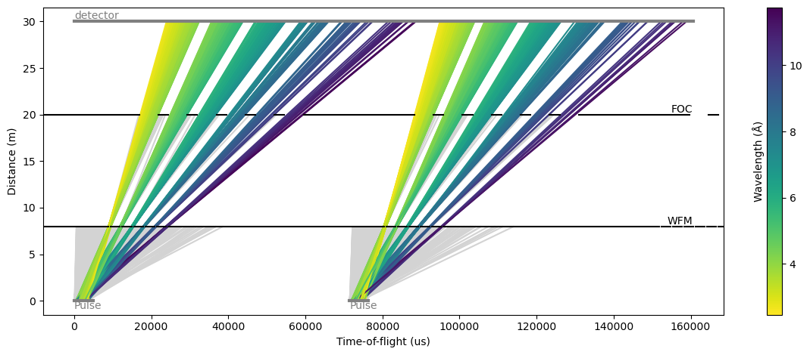
The signal of the raw event_time_offset at the detector wras around the 71 ms mark:
[18]:
results.to_nxevent_data(det.name).bins.concat().hist(event_time_offset=300).plot()
[18]:
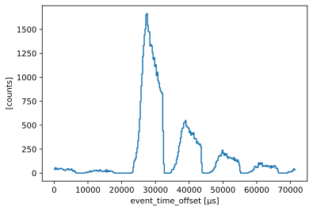
Setting up the workflow#
We set up the workflow as before, with PulseStride=1.
We have two choppers: a WFM chopper with 6 openings, and a frame-overlap chopper which ensures that the individual subframes do not overlap when they reach the detector.
[19]:
one_pulse = source.data['pulse', 0]
time_min = one_pulse.coords['time'].min()
time_max = one_pulse.coords['time'].max()
wavs_min = one_pulse.coords['wavelength'].min()
wavs_max = one_pulse.coords['wavelength'].max()
workflow = sl.Pipeline(unwrap.providers(), params=unwrap.params())
workflow[unwrap.PulsePeriod] = sc.reciprocal(source.frequency)
workflow[unwrap.SourceTimeRange] = time_min, time_max
workflow[unwrap.SourceWavelengthRange] = wavs_min, wavs_max
workflow[unwrap.Choppers] = {
ch.name: chopper_cascade.Chopper(
distance=ch.distance,
time_open=ch.open_close_times()[0].to(unit='s'),
time_close=ch.open_close_times()[1].to(unit='s')
)
for ch in choppers
}
det = detectors[-1]
workflow[unwrap.Ltotal] = det.distance
workflow[unwrap.RawData] = results.to_nxevent_data(det.name)
At this point it is useful to look at the propagation of the pulse through the chopper cascade:
[20]:
frames = workflow.compute(unwrap.ChopperCascadeFrames)[0]
at_detector = frames.propagate_to(det.distance)
at_detector.draw()
[20]:
(<Figure size 640x480 with 1 Axes>,
<Axes: title={'center': 'Frame propagation through chopper cascade'}, xlabel='ms', ylabel='Å'>)
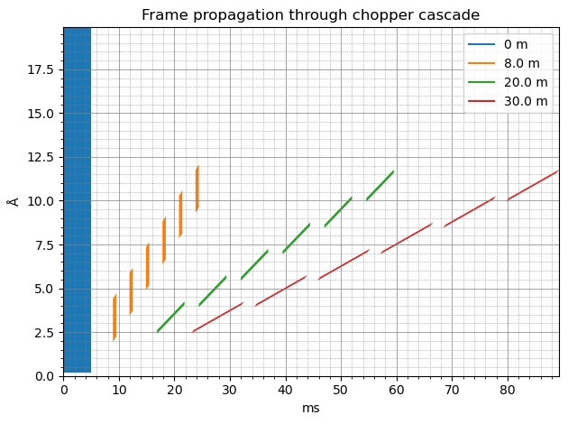
It illustrates nicely the pulse being chopped into 6 pieces, corresponding to the 6 openings of the choppers.
Computing time-of-flight#
The time-of-flight profile resembles the event_time_offset profile above, without the wrapping around at 71 ms.
[21]:
tofs = workflow.compute(unwrap.TofData)
pp.plot(tofs.bins.concat().hist(tof=300))
[21]:
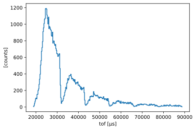
Conversion to wavelength#
Finally, the computed wavelengths show a very good agreement with the true wavelengths:
[22]:
# Define wavelength bin edges
bins = sc.linspace("wavelength", 2.0, 12.0, 401, unit="angstrom")
tofs.coords['Ltotal'] = tofs.coords.pop('distance')
wavs = tofs.transform_coords("wavelength", graph=graph).bins.concat().hist(wavelength=bins)
ground_truth = results["detector"].data.flatten(to="event")
ground_truth = ground_truth[~ground_truth.masks["blocked_by_others"]].hist(wavelength=bins)
pp.plot({'wfm': wavs, 'true': ground_truth})
[22]:
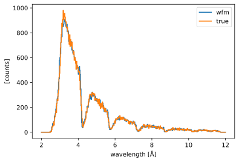